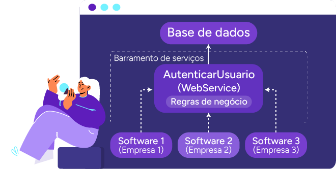
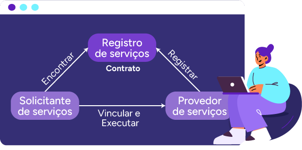

Programação orientada a serviços: objetivos, benefícios, contratos, acoplamento, abstração,
capacidade de reúso, autonomia, independência de estado, visibilidade e composição de serviços
Ao longo de seus estudos, você tem visto sistemas únicos, independentes e que não se comunicam
com
outros sistemas, o que torna os projetos mais complexos e difíceis de gerenciar quando se pensa
nessa estruturação aplicada em maior escala. Com a evolução da tecnologia, surgiu a necessidade
de
uma nova maneira de organizar os sistemas, tornando-os mais leves, eficientes e com maior
potencial
de crescimento.
Essa nova abordagem refere-se à service-oriented architecture (SOA), ou, em português,
arquitetura
orientada a serviços. É importante destacar que esse termo se refere à estrutura, organização e
estratégia do projeto, enquanto a programação de sistemas orientado a serviços consiste na
prática
de criar e desenvolver o sistema com base nessa estrutura. Sendo assim, você explorará, a
seguir, os
conceitos básicos, os princípios e as aplicações dessa arquitetura.
Arquitetura orientada a serviços e princípios fundamentais da SOA
Os princípios fundamentais da SOA são diretrizes essenciais que orientam a criação, a
implementação
e a interação dos serviços dentro de uma arquitetura orientada a serviços. Esses princípios
visam
garantir que os serviços sejam eficientes, reutilizáveis e escaláveis, além de facilitar a
integração e a manutenção do sistema ao longo do tempo.
Acompanhe, a seguir, os princípios que sustentam a aplicação bem-sucedida da SOA, proporcionando
uma
base sólida para o desenvolvimento de sistemas flexíveis e de alto desempenho.
Clique ou toque para visualizar o conteúdo.
Definição e objetivos
No início do desenvolvimento de softwares, os sistemas eram
desenvolvidos como
um projeto único, em que todas as funcionalidades (como interface de
usuário,
lógica de negócios e acesso a dados) eram integradas em uma única aplicação,
em
uma única plataforma. Essa estruturação mencionada é o que você tem
aprendido
até o momento, sendo conhecida como “monólito” ou “sistema monolítico”.
O uso da estruturação monolítica implica em alguns desafios específicos:
qualquer mudança ou atualização afeta todo o sistema, tornando o
desenvolvimento, a manutenção e a escalabilidade – capacidade de expansão de
um
projeto – mais difíceis. Além disso, como todas as partes do sistema estão
relacionadas entre si, em um único projeto, ele fica mais vulnerável a
falhas e
tem uma maior dificuldade para se adaptar a novos requisitos ou tecnologias.
Objetivando evitar a repetição de códigos, reduzir o tamanho dos projetos,
facilitar a implementação de soluções em múltiplos clientes e permitir a
aplicação de novas tecnologias, surgiu a arquitetura orientada a serviços. A
lógica principal dessa arquitetura é a divisão dos sistemas em partes
menores
chamadas serviços, que são módulos independentes (cada serviço com uma
funcionalidade específica e suas respectivas regras de negócio) que podem
ser
reutilizados por meio de requisições entre os serviços.
Considere que um serviço pode depender de outro serviço para atingir seus
objetivos. Essas requisições são normalmente realizadas por meio de um
enterprise service bus (EBS), ou barramento de serviço empresarial,
que se trata
de uma solução que conecta diferentes aplicativos dentro de uma empresa. Ele
funciona como um “ponto central” que ajuda esses aplicativos a se
comunicarem
entre si, fazendo ajustes nos dados, organizando as mensagens, direcionando
as
informações para os lugares certos, trocando os tipos de comunicação ou até
mesmo combinando várias solicitações em uma só. Embora seja uma abordagem
bastante comum para realizar requisições, seu uso não é obrigatório e
existem
alternativas que podem se encaixar melhor conforme o contexto, no entanto
não é
necessário se aprofundar nesse ponto agora.
Outra característica importante que pode ser observada é que as
funcionalidades
presentes em cada serviço podem ser desenvolvidas em qualquer linguagem,
pois é
criada uma interface que permite a comunicação entre os serviços, sem que
eles
dependam da linguagem usada para sua criação.
É possível pensar no seguinte exemplo: uma empresa de serviços financeiros é
composta de diversos processos e gerenciamentos que fazem parte de sua
operação,
como acesso ao sistema de contas-correntes, solicitação de empréstimos e
gestão
de investimentos. Todos esses processos exigem a autenticação de usuários.
Em
vez de reescrever o código de autenticação para cada um desses processos, a
empresa pode criar um único serviço de autenticação e reutilizá-lo em todas
as
aplicações que necessitam dessa funcionalidade, garantindo mais segurança e
eficiência no sistema como um todo.
Veja uma representação visual de como esse processo funciona:

Exemplo de aplicação de um
serviço a um sistema
Fonte: Adaptado de Guedes (2017)
A imagem mostra um diagrama de arquitetura de sistemas baseada em SOA
(arquitetura orientada a serviços). No centro da imagem, há um serviço web
chamado AutenticarUsuario, que interage com uma Base de Dados. O serviço
AutenticarUsuario contém regras de negócio e é acessado por três sistemas
diferentes: Software 1 (da Empresa 1), Software 2 (da Empresa 2) e Software
3 (da Empresa 3). A comunicação entre os sistemas e o serviço ocorre por
meio de um barramento de serviços, indicado por linhas pontilhadas. O
diagrama destaca a integração entre os sistemas de diferentes empresas, com
o serviço centralizando a autenticação de usuários.
Também é importante destacar que, no contexto de uso de serviços, caso seja
necessário realizar manutenção, não será preciso modificar todos os
sistemas,
apenas o serviço de autenticação de usuário, o que torna as atualizações
mais
ágeis e práticas.
Quando se fala em SOA, é muito comum que aconteça uma confusão em
relação a microsserviços. Embora sejam ideias semelhantes, têm
diferenças em relação a sua aplicabilidade e seus princípios. A SOA
é um estilo de design em que aplicações são divididas em
serviços
independentes que se comunicam por meio de interfaces. Já os
microsserviços são uma evolução da SOA, com serviços menores, mais
especializados e independentes, facilitando escalabilidade e
manutenção.
Benefícios
Com o tempo, essa abordagem começou a se destacar, sendo amplamente
implementada
e aprimorada conforme demandas do mercado, trazendo vários benefícios com
sua
aplicação. Confira alguns desses aspectos positivos:
Clique ou toque para visualizar o
conteúdo.
Maior agilidade para entrada e comercialização de um produto
no
mercado: com a reutilização de serviços em diversos
processos de
negócios, os desenvolvedores economizam tempo e custos. A SOA
permite que as aplicações sejam estruturadas de forma muito mais
rápida, sem a necessidade de escrever código e realizar
integrações
do zero. Isso acelera o design e o desenvolvimento do
software,
permitindo que os desenvolvedores dediquem menos tempo à
integração
e mais tempo à entrega e melhoria contínua dos aplicativos.
Manutenção eficiente: conforme apresentado anteriormente, em
sistemas com estruturação monolítica, a manutenção é mais complexa e
pesada em razão da forte interdependência entre os componentes,
tornando as alterações mais difíceis de serem implementadas. Em
contrapartida, na SOA, é mais simples criar, atualizar e depurar
serviços independentes e os sistemas que os consomem. As mudanças em
um serviço SOA tendem a impactar apenas esse serviço específico, sem
afetar o sistema como um todo, o que facilita a implementação de
novas tecnologias e a melhoria de funcionalidades específicas.
Integração de sistemas antigos em novos mercados: a SOA é
capaz de
apresentar grande adaptação aos avanços da tecnologia. Isso ocorre
porque, por meio da aplicação dessa estruturação, é possível adaptar
funcionalidades de sistemas antigos para novos ambientes e mercados,
garantindo que projetos mais antigos não se tornem obsoletos e
possam ser atualizados por meio do uso de serviços, ajudando também
na retenção de clientes. Seguindo o exemplo do sistema financeiro
apresentado anteriormente, uma empresa pode usar SOA para
transformar um sistema financeiro antigo, que estava restrito a
servidores legados, acessível por meio de novos aplicativos
web.
Agilidade
Maior agilidade para entrada e comercialização de um produto no
mercado: com
a reutilização de serviços em diversos processos de negócios, os
desenvolvedores economizam tempo e custos. A SOA permite que as
aplicações
sejam estruturadas de forma muito mais rápida, sem a necessidade de
escrever
código e realizar integrações do zero. Isso acelera o design e o
desenvolvimento do software, permitindo que os desenvolvedores
dediquem
menos tempo à integração e mais tempo à entrega e melhoria contínua dos
aplicativos.
Eficiência
Manutenção eficiente: conforme apresentado anteriormente, em
sistemas com
estruturação monolítica, a manutenção é mais complexa e pesada em razão
da
forte interdependência entre os componentes, tornando as alterações mais
difíceis de serem implementadas. Em contrapartida, na SOA, é mais
simples
criar, atualizar e depurar serviços independentes e os sistemas que os
consomem. As mudanças em um serviço SOA tendem a impactar apenas esse
serviço específico, sem afetar o sistema como um todo, o que facilita a
implementação de novas tecnologias e a melhoria de funcionalidades
específicas.
Integração
Integração de sistemas antigos em novos mercados: a SOA é capaz de
apresentar grande adaptação aos avanços da tecnologia. Isso ocorre
porque,
por meio da aplicação dessa estruturação, é possível adaptar
funcionalidades
de sistemas antigos para novos ambientes e mercados, garantindo que
projetos
mais antigos não se tornem obsoletos e possam ser atualizados por meio
do
uso de serviços, ajudando também na retenção de clientes. Seguindo o
exemplo
do sistema financeiro apresentado anteriormente, uma empresa pode usar
SOA
para transformar um sistema financeiro antigo, que estava restrito a
servidores legados, acessível por meio de novos aplicativos web.
É possível afirmar que essa nova estrutura desempenhou um papel-chave no
avanço
tecnológico. Ela mudou a maneira como os sistemas são projetados e continua
sendo essencial para a integração de tecnologias, com melhorias constantes e
inovações, sendo uma referência na área de serviços.
Contrato de serviço padronizado
Este princípio garante que serviços dentro do mesmo inventário de serviços
(ou
seja, um conjunto de serviços disponíveis em um sistema) sigam os mesmos
padrões
de design de contrato. Um contrato de serviço descreve formalmente
como um
serviço pode ser utilizado, definindo as operações disponíveis, os dados
esperados (entrada/saída) e o protocolo de comunicação – por exemplo: HTTP
(hypertext transfer protocol), SOAP (simple object access
protocol), REST
(representational state transfer) etc. Ele também especifica regras e
políticas
para uso. Isso garante que as interações sejam claras e previsíveis entre os
serviços e os consumidores.
Baixo acoplamento de serviço
O acoplamento, na perspectiva de SOA, significa o grau de dependência entre
componentes. Quando um serviço tem alto acoplamento, ele depende fortemente
de
outros sistemas, o que dificulta a manutenção, a evolução ou a reutilização
do
serviço. Entretanto, quando se tem um baixo acoplamento, como neste caso,
isso
significa que os serviços funcionam de forma independente, com poucas
exigências
dos consumidores, e que não estão diretamente vinculados ao seu ambiente de
execução, o que o torna mais flexível. Os contratos de serviço estabelecerão
os
requisitos mínimos de dependência para os consumidores e, ao mesmo tempo, os
serviços serão projetados para operar de forma independente do ambiente em
que
estão inseridos.
Abstração de serviço
No desenvolvimento de software, abstração é o conceito de ocultar
detalhes
complexos e expor apenas as informações relevantes ou essenciais para o uso
de
um componente ou sistema. Esse princípio define que os contratos de serviço
conterão apenas informações essenciais, limitando as informações sobre os
serviços ao que está publicado nos contratos, fazendo com que o único foco
para
o consumidor seja em como será consumido o serviço, sem se preocupar em como
ele
foi desenvolvido.
Reusabilidade de serviço
A lógica de desenvolvimento é organizada dentro dos serviços com o objetivo
de
possibilitar seu reaproveitamento em diferentes ambientes. O princípio está
diretamente relacionado à necessidade de adaptar os serviços a diversos
contextos e demandas aos quais possa servir, fundamentando o conceito de
integração de serviços e evitando a produção de recursos duplicados. A
reutilização também oferece aos desenvolvedores a habilidade de responder
rapidamente às demandas do negócio, seja para implementar atualizações, seja
para adicionar novas funcionalidades, garantindo uma excelente vantagem
competitiva, já que permite uma resposta mais ágil e eficiente às mudanças e
demandas do mercado.
Autonomia de serviço
A autonomia do serviço, de forma resumida, significa que ele deve poder
controlar suas operações e o ambiente de execução sem depender de outros.
Isso
está diretamente relacionado ao princípio de baixo acoplamento, que
determina
que os serviços devem ter o mínimo de dependência um do outro. Em sistemas
mais
complexos, os serviços geralmente têm maior dependência de outros para
funcionar. Quando um serviço está mais integrado a outros, ele tem menos
controle sobre o que faz, pois depende de outros para concluir suas tarefas.
Já os serviços mais simples, que não precisam de outros para funcionar, têm
mais
controle sobre o que fazem e, por isso, são mais flexíveis e fáceis de
escalar,
ou seja, podem ser facilmente adaptados ou expandidos. Em ambos os casos,
busca-se a autonomia de serviço, embora ela seja notada com muito mais
facilidade em sistemas menos complexos.
Serviço sem estado (stateless)
Um serviço sem estado é aquele que não armazena informações sobre o estado
de
suas interações anteriores. Em vez de manter dados de sessões ou transações
passadas, o serviço processa cada solicitação de forma independente, sem
precisar se lembrar do que aconteceu antes. Isso minimiza o consumo de
recursos,
como memória ou processamento, pois o serviço não precisa alocar espaço para
manter essas informações.
Sendo assim, um serviço sem estado deverá exclusivamente receber a mensagem,
processá-la adequadamente de acordo com a lógica necessária daquela
requisição e
responder de acordo com o esperado em cada caso. O gerenciamento de estado,
caso
seja necessário, pode ser transferido para outras partes do sistema, como
bancos
de dados ou sistemas de cache. Isso permite que o serviço se
concentre em
processar a solicitação atual, sem sobrecarga de manter o estado entre as
interações.
Descoberta de serviço
Também conhecido como “visibilidade de serviço”, este princípio define que
os
serviços devem ser facilmente encontrados e utilizados em sistemas
distribuídos
por meio da aplicação de metadados comunicativos. Os metadados são
informações
adicionais que descrevem o serviço, como o nome do serviço, a descrição de
suas
funções, o endereço de acesso, os contratos, as interfaces de interação e os
requisitos de segurança, por exemplo. Essas informações permitem que
sistemas e
componentes descubram e interpretem os serviços sem precisar conhecer sua
implementação interna (princípio da abstração).
A descoberta de serviço facilita a integração e a capacidade de sistemas
trocarem informações e funcionarem juntos, apesar das diferenças
tecnológicas
entre diferentes sistemas. Essa busca pode ocorrer manualmente ou
automaticamente por meio de diretórios ou repositórios de serviços.
Composição de serviços
Todos os serviços vinculados devem participar de forma eficaz e auxiliar o
fluxo
de trabalho, integrando suas funcionalidades de forma coesa,
independentemente
do tamanho e da complexidade da composição. É importante destacar também que
essa composição deverá ser acessível e de fácil gerenciamento.
Agora que você tem uma compreensão básica dos princípios da SOA e de alguns termos comumente
utilizados nesse contexto, compreenda como funciona o processo de uso de serviços nessa
arquitetura.
É possível começar com o paradigma encontrar-vincular-executar (find-bind-execute), que é
a base
desse processo. Veja:

Diagrama representando o paradigma
find-bind-execute
Fonte: Adaptado de Mahmoud (2005)
A imagem apresenta um diagrama com três elementos principais: Solicitante de serviços,
Registro
de serviços e Provedor de serviços. O diagrama ilustra o fluxo de interações entre eles. O
Solicitante de serviços é a parte que tem a ação de busca de serviços. Ele se conecta ao
Registro de serviços, onde os serviços estão cadastrados. O Provedor de serviços é o
responsável
por oferecer os serviços, e ele se conecta tanto ao Registro de serviços, onde registra seus
sistemas disponíveis, quanto ao Solicitante de serviços, com quem estabelece um contrato,
realiza o vínculo com o contratante e fornece o serviço para realizar execuções de
requisições.
O processo é circular, com cada elemento interagindo de maneira contínua para permitir a
execução do serviço.
Com maior detalhamento, veja a seguir como a relação dos elementos desse diagrama acontece.
Provedor de serviços e registro de serviços
O provedor de serviços é a entidade que oferecerá os serviços para outras empresas utilizarem,
enquanto o registro de serviços armazena as informações sobre esses serviços, facilitando a
descoberta e a integração por outros sistemas.
O provedor registra seu serviço em um diretório público para que os consumidores possam
localizá-lo
e utilizá-lo, podendo ser por meio de sites ou ferramentas específicas para busca de
serviços. Esse
registro armazena informações básicas, como a descrição funcional – o que o serviço faz –, a
interface – como o serviço pode ser acessado, incluindo detalhes técnicos como contratos em WSDL
(web services description language) ou APIs (application programming interface) –
e o endpoint –
endereço onde o serviço pode ser acessado para requisições –, conforme o princípio da descoberta
de
serviço. A partir disso, é possível prosseguir para o processo find-bind-execute.
Clique ou toque para visualizar o conteúdo.
Descoberta do serviço (find –
encontrar)
Em um primeiro momento, na fase inicial de integração de um sistema a um serviço,
o solicitante realizará a busca pelos serviços disponíveis (por meio do provedor
de serviços) que mais se adequam a sua necessidade. Ao selecionar um serviço que
deseja vincular ao seu projeto, será informado sobre detalhes do contrato do
serviço (conforme o princípio do contrato de serviço padronizado) e
endpoint,
informações que serão utilizadas para definições e configurações iniciais.
Vinculação do serviço (bind –
vincular)
Após a descoberta inicial, o consumidor de serviços conecta seu sistema
diretamente ao endpoint (usando as informações obtidas no registro) para
poder
realizar as requisições. Assim, os detalhes do serviço, como o endpoint e
as
especificações, são armazenados localmente no sistema consumidor, eliminando a
necessidade de buscar o serviço novamente, sendo possível acessá-lo diretamente
pelo endpoint.
Consumo do serviço (execute –
executar)
Após todas as etapas anteriores, o consumidor pode começar a realizar as
requisições
ao serviço. Para cada requisição, será enviada uma solicitação diretamente para
o
endpoint do serviço, sem precisar repetir a consulta ao provedor de
serviços em
razão dos passos anteriores de vinculação.
A requisição verificará se existe um serviço que corresponda aos critérios
definidos
pelo consumidor (como formato dos dados, endpoint, parâmetros de
segurança, versão
da API, entre outros). Caso seja confirmado, o serviço processará a solicitação
e
retornará resultados ou executará as ações necessárias.
O modelo find-bind-execute resume o funcionamento de sistemas baseados em
serviços: um cliente
localiza (find) o serviço necessário, estabelece uma conexão (bind) com ele e,
então, realiza a
execução (execute) da funcionalidade oferecida. Esse processo organiza a interação entre
consumidores e provedores de serviços, promovendo flexibilidade, reutilização e clareza nas
operações.
Encerramento
A SOA surgiu como uma abordagem inovadora para integrar sistemas distribuídos, permitindo maior
flexibilidade e reutilização. Ela foi projetada para atender à crescente complexidade dos
ambientes
corporativos, com foco em princípios como modularidade, interoperabilidade e desacoplamento.
Isso
tornou os sistemas mais escaláveis e eficientes, permitindo que diferentes aplicativos se
conectassem e compartilhassem dados de maneira mais ágil.
Com o tempo, a SOA evoluiu para arquiteturas mais granulares, dividindo os sistemas em
componentes
menores, como os microsserviços. Essa evolução aprimorou ainda mais a autonomia e a
escalabilidade,
permitindo que cada componente fosse desenvolvido, implantado e escalado de forma independente.
Em razão do rápido avanço das tecnologias, é essencial continuar acompanhando as evoluções
tecnológicas dessa área. A arquitetura de software está em constante mudança, e entender
essas
tendências é fundamental para garantir soluções eficientes e alinhadas com as novas demandas do
mercado, sendo atualmente um ponto de conhecimento imprescindível para o mercado de trabalho.